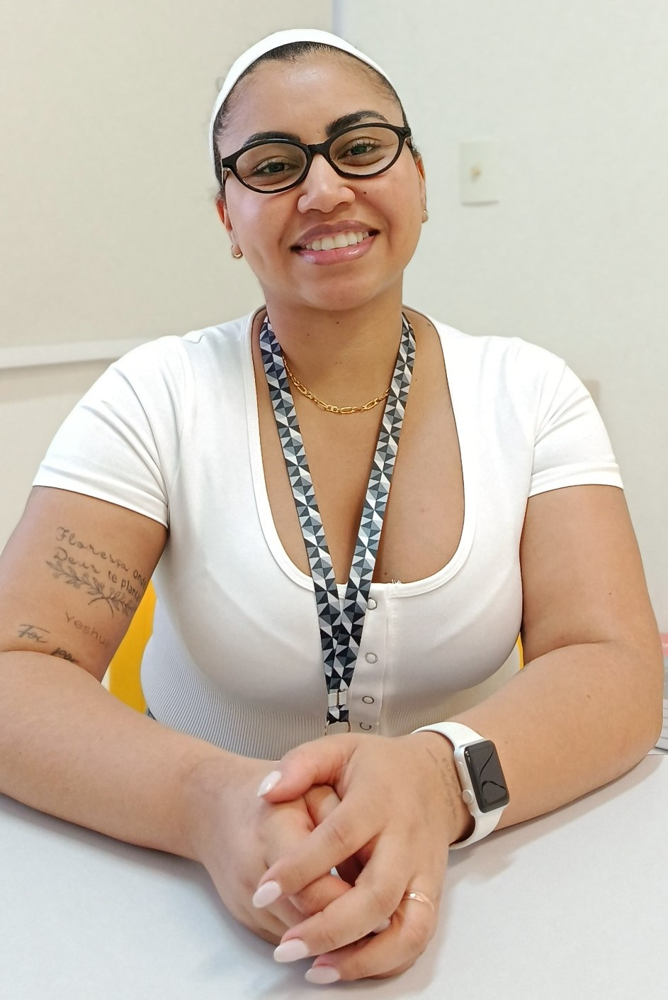

Samara Venancio Faver
Coordenadora PedagógicaSobre sua trajetória
Atuando como professora do SESI desde janeiro de 2013 e à frente da Coordenação Pedagógica no setor educacional desde outubro de 2022, Samara construiu uma trajetória marcada pela constante dedicação ao desenvolvimento de pessoas. Graduada no final de 2010, assumiu sua primeira turma do Ensino Fundamental em abril de 2011 após aprovação em concurso público na Prefeitura de Limeira, conciliando também aulas na rede privada e no Estado. Sua vocação, contudo, nasceu ainda na infância por incentivo de quem a alfabetizou: “A minha professora do segundo e terceiro aninho, a professora Cláudia. Ela foi uma pessoa que eu olhei e falei: quero ser professora.â€
O caminho até o cargo de gestão exigiu resiliência diante de adversidades financeiras e discriminações. Samara relembra com firmeza as barreiras enfrentadas ao ingressar jovem no mercado: “Minha famÃlia era pobre. Depois de conseguir a graduação, eu sofri muito preconceito por ser uma mulher jovem já assumindo, pela minha cor, pelas tatuagens, pelo cabelo... Como se a cor, o cabelo e a tatuagem invalidassem o conhecimento que eu tenho pra estar em um cargo de gestão.†Ao olhar para trás, a coordenadora reconhece que o autoconhecimento teria sido seu maior aliado no inÃcio da carreira: “Eu me fortaleceria mais emocionalmente, teria buscado mais autoconhecimento pra enfrentar os desafios.â€
Por trás da rotina escolar diária, Samara destaca que a liderança pedagógica envolve um trabalho minucioso e invisÃvel para a maioria da comunidade escolar. “As pessoas normalmente não percebem a burocracia, os planejamentos, as formações, o estudo para subsidiar minha atuação diáriaâ€, ressalta. O motor de sua motivação continua sendo o impacto humano do ensino: “O que eu mais gosto no meu trabalho é contribuir com a formação das pessoas.†O fruto desse esforço também trouxe realizações pessoais inesquecÃveis, como a conquista da casa própria idealizada por meio do fruto de seu trabalho.
Para renovar suas energias e liderança, Samara busca referências na literatura e em figuras públicas como Michelle Obama, a quem admira pela postura, autoconhecimento e representatividade como mulher negra em posições de alto escalão. Além disso, valoriza o aprendizado diário com todos que cruzam seu caminho no ambiente de trabalho.
Aos jovens e estudantes que se preparam para dar os primeiros passos no mercado de trabalho, a coordenadora deixa orientações focadas no cuidado pessoal e na busca por boas referências: “Cuidem da mente, se conheçam, respeitem seus limites, leiam e busquem pessoas que, de fato, sejam influências positivas.†Encerrando sua fala para o projeto, Samara deixa uma frase que resume sua história de perseverança: “A determinação tem um preço, mas ela leva as pessoas longe.â€
“Cuidem da mente, se conheçam, respeitem seus limites, leiam e busquem pessoas que, de fato, sejam influências positivas.â€